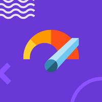

Credit Risk com Machine Learning (EM BREVE!!) 🖐️
Time-series forecasting is one of the longest-standing applications of machine learning, and is one of the most prevalent techniques used across all of industry (if not the most prevalent). And yet, during the recent ML boom, forecasting has been somewhat left behind.
The goal of this course is to marry the latest-and-greatest of the field of ML with the existing, classical statistical techniques. In particular, the focus of this course is the practical applications of these techniques, and how they supercharge applications such as causal analysis, demand intelligence, and labor planning
Sr. DS Manager, Quinto Andar
MSc em Economia
- Projetos realistas que ensinam habilidades da indústria.
- Encontros ao vivo, 2x por semana, duração de 3 semanas.
- Aprenda junto com um pequeno grupo de colegas profissionais.
PRÓXIMA TURMA (3 semanas)
04 de abril
PREÇO (primeiro lote)
R$ 990 (1500)
Curso ensinado por um profissional
com vasta experiência na indústria!
Sênior DS Manager no Quinto Andar e MSc em Economia
Sou um instrutor experiente em Data Science, com mais de 4 anos liderando times de DS e 3 anos de experiência aplicando DS em Fintech. Trabalho com modelos de crédito em grande escala e já atuei em diferentes empresas (Conta Azul, Quero Educação, Quinto Andar, dentre outras...). Eu recebi prêmios por projetos inovadores em DS, incluindo o prêmio de projeto mais inovador na especialização DS4A de correlation one e o prêmio "commit de ouro" no Quinto Andar. Além disso, sou formado em ciências da computação e tenho um mestrado em economia pela Mackenzie. Eu tenho mais de 2 anos de experiência ensinando Data Science e já dei aulas para mais de 200 alunos, com uma média de avaliação de 9 em NPS. Se você quer aprender Data Science com alguém com ampla experiência e habilidades específicas em Fintech, eu sou o instrutor certo para você.
Sobre o Curso
Para Quem é esse Curso?
Cientistas de dados que têm experiência com crédito, mas desejam acompanhar o estado da arte.
Cientistas de dados e analistas de dados que desejam começar a fazer modelos de crédito.
Qualquer pessoa de dados que deseja entender com exemplos realistas e com maior profundida a aplicação de ML em crédito.
Pré-requisitos?
Conhecimento de Python, incluindo Pandas e NumPy.
Fundamentos básicos de aprendizado de máquina.
Trabalhe em projetos que dão vida ao seu aprendizado. Feito para ser diretamente aplicável em seu trabalho
Sessões e perguntas e respostas com nossos instrutores especializados, juntamente com projetos do mundo real.